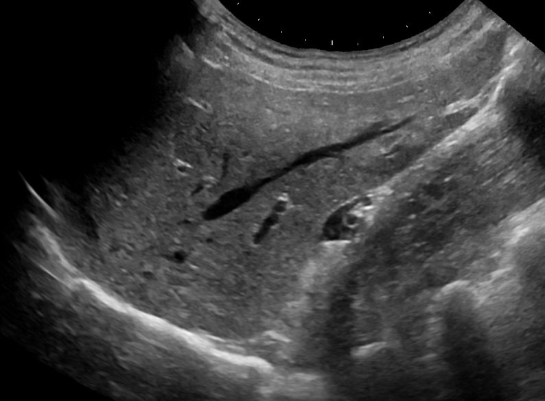

Normal liver (US)الكبد الطبيعي بالسونارNormal · الصورة الطبيعية
الحالة: مقطع سهمي طبيعي للفص الأيمن من الكبد.
النمط: Greyscale (B-mode) — السائل (البول، الصفراء، الدم) أسود عديم الصدى (anechoic)، والحصى والعظم بيضاء لامعة (echogenic) وخلفها ظل؛ أما الدهون فلمعانها يختلف (الدهن تحت الجلد غالباً داكن قليل الصدى).
ما يُرى فيها: نسيج الكبد متجانس متوسط الصدى (homogeneous echotexture)، والأوعية الكبدية أنابيب سوداء عديمة الصدى، والحجاب الحاجز خط أبيض لامع خلف الكبد (أسفل الصورة).
الوضعية: Sagittal, right midclavicular line